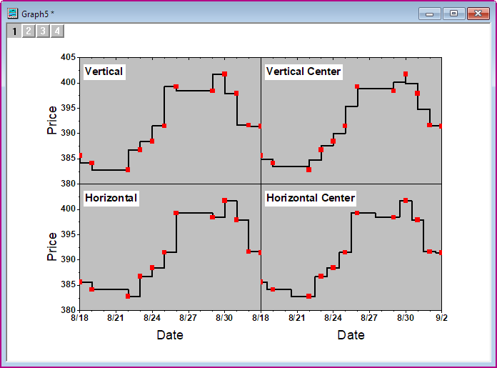

Mehrere Layer mit verknüpften Achsen
MultiLayer-LinkAxes
Zusammenfassung
Dieses Tutorial zeigt Ihnen, wie Sie vier Diagramme in einem zusammenfügen, das mehrere Layer mit verknüpften Achsen enthält.
- 
Was Sie lernen werden
- Ein Punkt-Liniendiagramm erstellen
- Diagramme zusammenfügen
- Layerachsen verknüpfen
- Achsen benutzerdefiniert anpassen
Schritte
Dieses Tutorial basiert auf dem Projekt Tutorial Data: <Origin-Verzeichnis>\Samples\Tutorial Data.opj.
- Öffnen Sie das Projekt Tutorial Data und navigieren Sie zum Ordner Multiple Layers with Step Plot im Projekt Explorer.
- Aktivieren Sie die Arbeitsmappe, markieren Sie die Spalte Value1 und erstellen Sie ein Diagramm über das Menü Zeichnen: Einfache 2D: Punkt-Liniendiagramm.
- Aktivieren Sie das Diagramm, klicken Sie mit der rechten Maustaste und wählen Sie Einstellungen im Kontextmenü. Hierdurch öffnet sich der Dialog Objekteigenschaften.
- Geben Sie den folgenden Text auf der Registerkarte Text im Textfeld ein: \b(Vertical), und setzen Sie die Größe auf 36.
- Wechseln Sie zur Registerkarte Rahmen und legen Sie Folgendes fest: Klicken Sie auf OK. Verschieben Sie die Legende dann an die richtige Position.
- Klicken Sie doppelt auf die weiße Fläche im Layer des Diagramms, um den Dialog Details Zeichnung zu öffnen. Wählen Sie Layer1 im linken Bedienfeld. Aktivieren Sie die Registerkarte Hintergrund im rechten Bedienfeld und wählen Sie Hellgrau für die Farbe. Wählen Sie dann das Diagramm in Layer1 im linken Bedienfeld und setzen Sie auf der Registerkarte Symbol im rechten Bedienfeld die Größe auf 15 und die Symbolfarbe auf Rot. Wechseln Sie zur Registerkarte Linie, wählen Sie Stufe Vert. in der Auswahlliste Verbindung und setzen Sie die Breite auf 4. Klicken Sie auf OK, um die Einstellungen anzuwenden.

- Der nächste Schritt besteht in der Duplikation ähnlicher Diagramme aus den anderen drei Spalten. Klicken Sie mit der rechten Maustaste auf die Titelleiste des Diagrammfensters und wählen Sie Duplizieren (Stapelzeichnen) im Kontextmenü:
- Wählen Sie im aufgerufenen Dialog die Option Spalte in der Auswahlliste Zeichnung stapeln mit, halten Sie die Strg-Taste gedrückt und klicken Sie auf alle drei Spalten C, D, E, um sie auszuwählen. Klicken Sie auf OK:
- Für jede Spalte ist der Legendentext und die Auswahlliste Verbindung unterschiedlich, siehe Auflistung unten.
- Für Spalte Value2: Legendentext = \b(Vertical Center); Verbinden = Stufe V Zentr.
- Für Spalte Value3: Legendentext = \b(Horizontal); Verbinden = Stufe Horiz.
- Für Spalte Value4: Legendentext = \b(Horizontal Center); Verbinden = Stufe H Zentr.
- Aktivieren Sie ein Diagramm und wählen Sie dann im Menü Grafik: Grafikfenster zusammenfügen, um den Dialog merge_graph zu öffnen. Ändern Sie die Einstellungen, wie im folgenden Bild zu sehen. Klicken Sie dann auf die Schaltfläche OK, um diese Diagramme zusammenzufügen.
- Aktivieren Sie das neu zusammengefügte Diagramm und wählen Sie im Menü Grafik: Layer-Verwaltung, um den Dialog Layer Management zu öffnen. Benennen Sie im Bedienfeld Layerauswahl die Layer um, indem Sie doppelt auf den Namen klicken, und ordnen Sie die Layer neu an, indem Sie auf den Layerindex klicken und sie nach oben oder unten ziehen. Stellen Sie sicher, dass die endgültigen Layernamen und deren Anordnung die gleichen sind wie in dem unten stehenden Bild (im Bereich Vorschau können die Indizes und Positionen der Layer gezeigt werden).
- Drücken Sie im Bedienfeld Layerauswahl die Strg-Taste auf der Tastatur und wählen Sie die folgenden Layer aus: Vertical Center, Horizontal und Horizontal Center. Wechseln Sie zur Registerkarte Verknüpfung und wählen Sie 1 in der Auswahlliste Verknüpfung mit. Dann werden Verknüpfung der X-Achse und Verknüpfung der Y-Achse auf Gerade (1 zu 1) gesetzt. Klicken Sie auf die Schaltfläche Übernehmen.
- Wechseln Sie zur Registerkarte Achsen, wählen Sie den Layer Vertical im linken Bedienfeld, aktivieren Sie dann alle Kontrollkästchen für Achsen in den Zweigen Unten, Links, Oben und Rechts. Wählen Sie die Option Innen in der Auswahlliste Hilfsstriche im Zweig Oben. Klicken Sie auf die Schaltfläche Anwenden.

- Wählen Sie den Layer Vertical Center. Auf der Registerkarte Achsen haben die Zweige Unten, Links und Rechts die gleichen Einstellungen. Die Einstellungen für den Zweig Oben werden im Bild unten gezeigt. Klicken Sie auf die Schaltfläche Anwenden.
- Wählen Sie den Layer Horizontal. Aktivieren Sie auf der Registerkarte Achsen die Kontrollkästchen Achsen im Zweig Oben und Rechts. Klicken Sie auf die Schaltfläche Anwenden.
- Wählen Sie den Layer Horizontal Center. Aktivieren Sie auf der Registerkarte Achsen das Kontrollkästchen Achsen im Zweig Oben. Klicken Sie auf die Schaltfläche Anwenden.
- Klicken Sie auf OK, um den Dialog Layer Management zu schließen.
- Klicken Sie doppelt auf die X-Achse des Layers links unten, um den Dialog Achsen zu öffnen. Legen Sie auf der Seite Skalierung die Achsenskalierung, wie im untenstehenden Bild zu sehen, fest:
- Klicken Sie auf das Symbol Vertikal im linken Bedienfeld, gehen Sie zur Registerkarte Skalierung der Y-Achse und ändern Sie die Achsenskalierung:
- Gehen Sie zur Registerkarte Beschriftung der Hilfsstriche, klicken Sie auf das Symbol Unten im linken Bedienfeld und ändern Sie die Anzeige der Hilfsstrichsbeschriftungen der X-Achse:

- Gehen Sie zur Registerkarte Spezielle Hilfsstriche und blenden Sie die Beschriftung am Achsenende aus, indem Sie die Option Verstecken in der Auswahlliste Zeigen für Achsenende wählen:
- Klicken Sie auf das Symbol Links im linken Bedienfeld und blenden Sie die Beschriftung am Ende der Y-Achse aus, indem Sie die Option Verstecken in der Auswahlliste Zeigen für Achsenende wählen:
- Wählen Sie Layer 4 links unten im Dialog Achsen. Wiederholen Sie dann Schritt 18.
- Gehen Sie zur Registerkarte Beschriftung der Hilfsstriche und Unterregisterkarte Format, setzen Sie die Größe auf 16 und aktivieren Sie das Feld Fett.
- Klicken Sie auf OK, um die Einstellung zu speichern, und schließen Sie den Dialog.
- Klicken Sie mit der rechten Maustaste auf die Hilfsstrichsbeschriftung der X-Achse und wählen Sie Format kopieren. Klicken Sie mit der rechten Maustaste auf den schwarzen Bereich des Diagramms und wählen Sie Format einfügen in ...: Alle Beschriftungen der Achsenhilfsstriche: Schrift.
- Klicken Sie auf einen Achsentitel. Setzen Sie auf der Minisymbolleiste die Schriftgröße auf 18.
- Klicken Sie mit der rechten Maustaste auf den Achsentitel und wählen Sie Format kopieren: Alle Stilformate. Klicken Sie mit der rechten Maustaste auf den schwarzen Bereich des Diagramms und wählen Sie Format einfügen in ...: Alle Achsentitel: Schrift.
- Ändern Sie beide Y-Titel in Price und machen Sie sie fett.